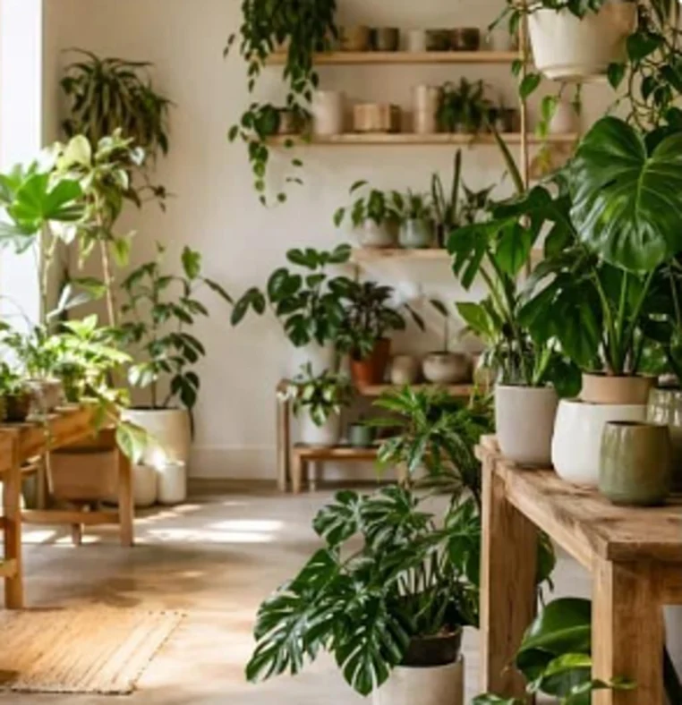

Boutique de plantes · Ixelles
Des plantes pour des pièces plus calmes
Une boutique de quartier : des plantes faciles à vivre, des pots tournés à la main et des conseils d’entretien simples.

Plantes faciles
Monstera, pothos, fougères : des plantes choisies pour les appartements bruxellois, même peu lumineux.
Pots d’artisans
Des pots en grès et en terre cuite, tournés par des céramistes de la région.
Conseils d’entretien
Arrosage, lumière, rempotage : une fiche simple accompagne chaque plante.
Atelier rempotage, le samedi matin
Venez avec votre plante, on s’occupe du terreau. Six places par atelier, café offert.
- Mardi – vendredi11 h – 19 h
- Samedi10 h – 18 h
- Dimanche, lundiFermé